(Chapter ? will omly be unlocked if you have already completed all of the other five chapters.)
Concept Bendy
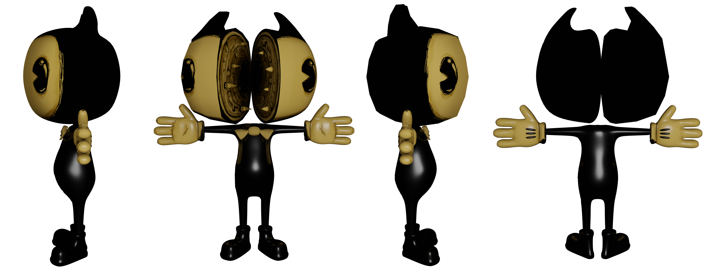 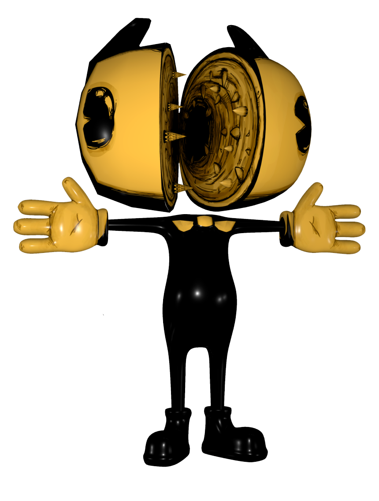
Concept Bendy was orginally going to be the one who was going to chase you, but it ended up being changed to Ink Bendy. Concept Bendy is smaller than Ink Bendy and about the same as Alpha Bendy. Concept Bendy looks almost exactly like Bendy, but this type of Bendy, however, has a mouth that splits it's own face revealing hundreds of tiny teeth.
The Butcher Gang(in game)
 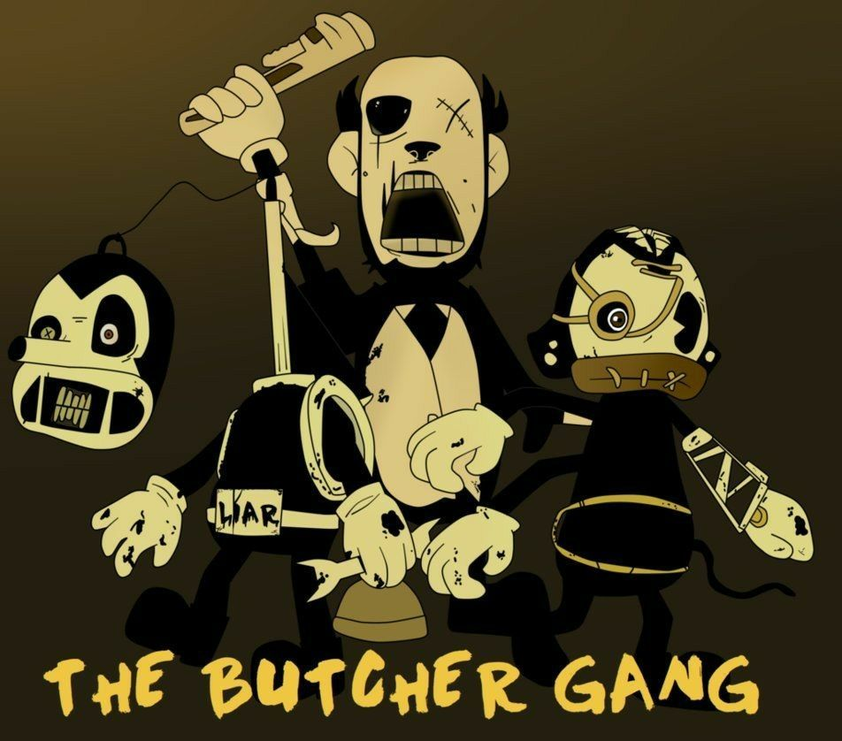
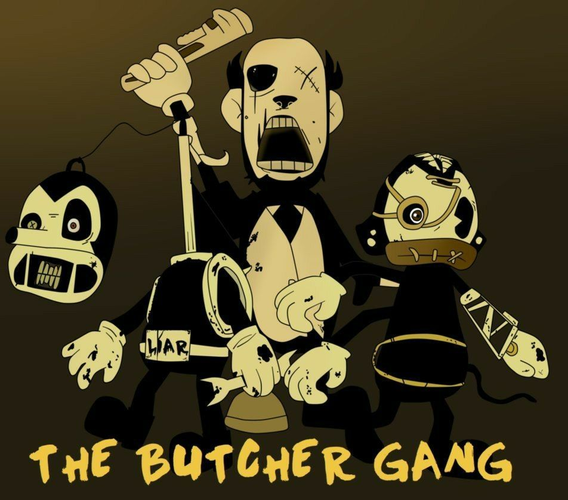
The butcher gang is made up of Piper, Stricker, and Fisher. They are all deformed versions of the butcher gang from the cartoons, which have Charlie, Barley, and Edgar.
The Butcher Gang(Cartoon)
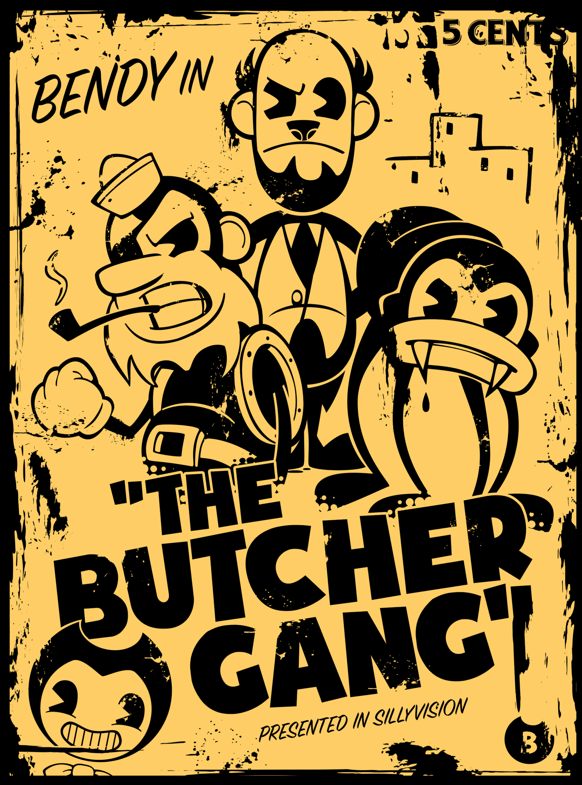 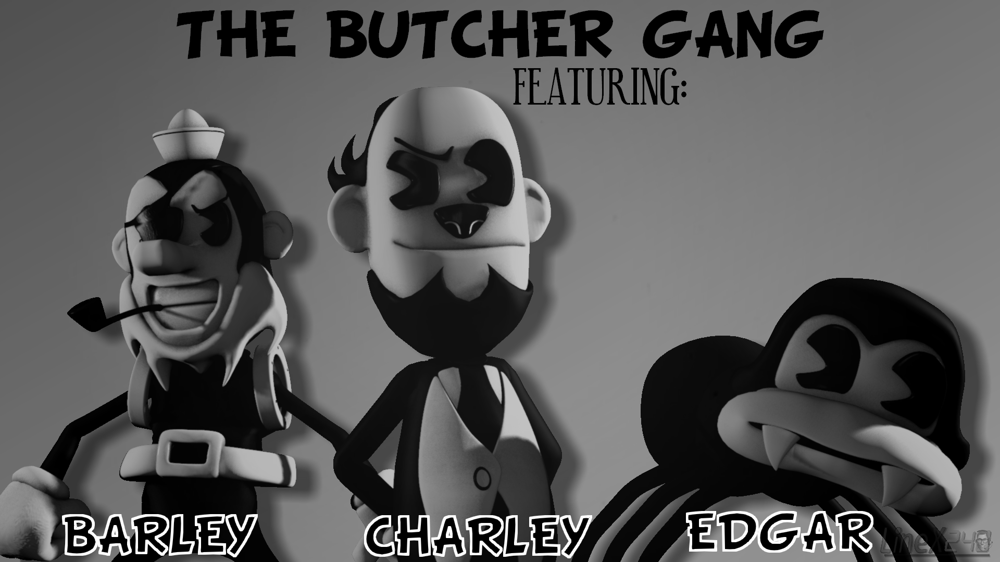 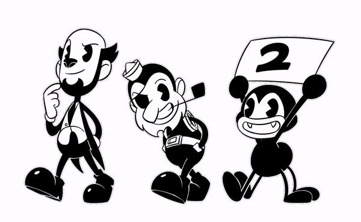The members of the butcher gang are Barley, Charlie, and Edgar, as prevously mentioned. Barley is a sailor and is usually the side character of the group. He wears a little sailor hat, and eyepatch, a belt, a pipe, and has a long white beard. Charlie is more of the leader of the group, and no one doesn't quite knows what he is. He has a cat-like nose, chimp-like ears, and a human shaped body with a tailored suit. Edgar is a little spider, dispite having six legs instead of eight, Edgar is the comic relief of the group, and more playful than the others. He has little fangs, and nub-like ears.
Pipe wrench
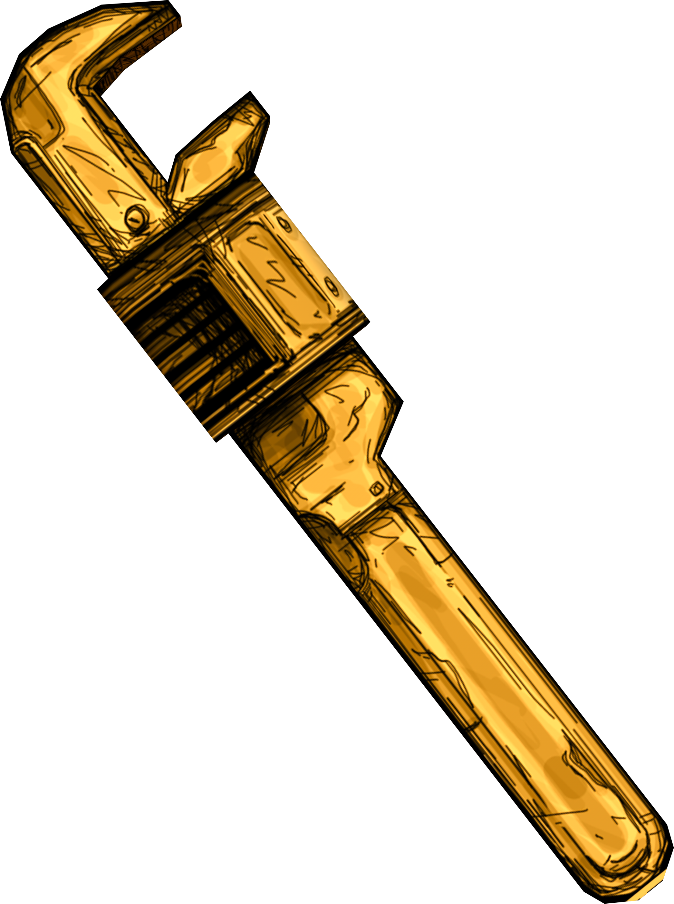This litle guy is based off of a Stillson-pattern wrench. It only has sepia yellow, a bit of brown and black, and the weapon is weaker than the axe but swings faster than a Gent Pipe. In chapter 3; Rise and Fall, you use this wrench to get the special gears in level K, and in chapter 5; The Last Reel, some of the Lost Ones wield it.
Gent Pipe
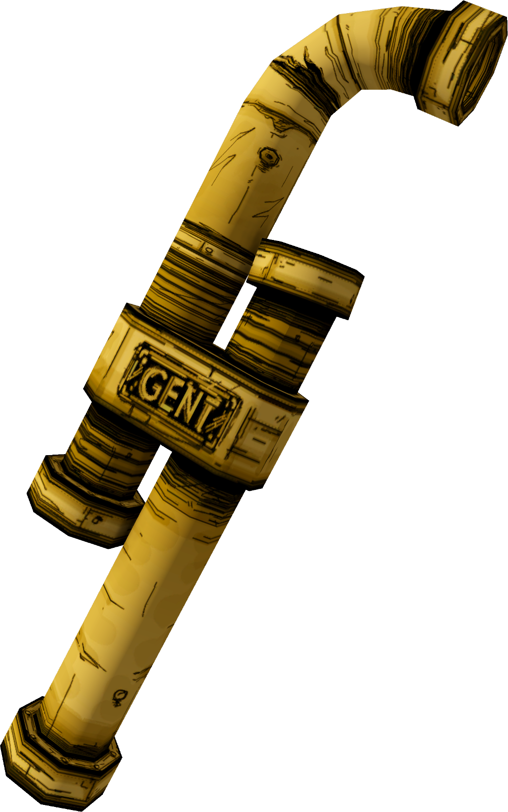This weapon is basically two pipes put together, one curved, while the other is straight. On each pipe, there are scratches and dents on them, and the word, "GENT" is written on the connecter. You use it in chapter 3;Rise and Fall, after Boris gives it to Henry, chapter 4; Colossal Wonders, when you use it to defeat Brute Boris, and chapter 5; The Last Reel, when you optain it until the point fight Sammy Lawrence. It is also seen in some of the Lost Ones' hands when you fight them, and in chapter ? Tom Boris is holding a gent pipe.
Scythe
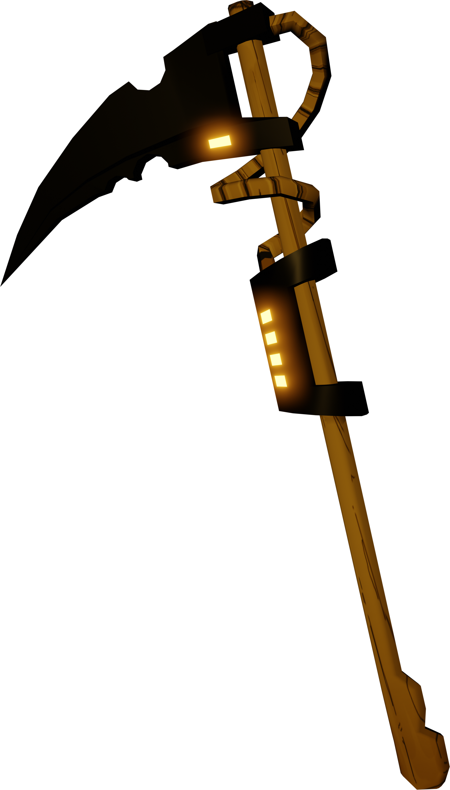The scythe's blade is completely black on a wooden handle with some lights. You'll find it only in chapter 5; The Last Reel, after opening the door to the vault, you'll find it in one of the rooms. There will also be a Sammy Searcher in Joey Drew's office.
Axe
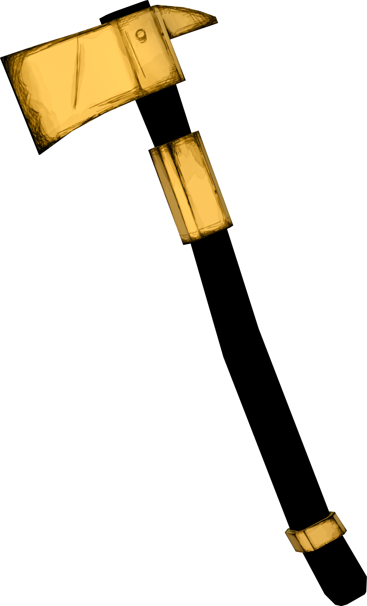It's based on a fireman's axe, and a hatchet. The blade is a tanis-yellow, while the handle is balck. Near the head of the axe, there is a tube-like thing while at the other end, there is a ring. You'll be able to use it throughout all of the chapters. aside from the sythe, the axe is presumably the strongest weapon.
Tommy Gun
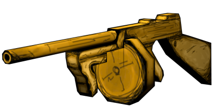It has 18 rounds of ammo, and is a bit weaker than the axe, but has a longer range. The gun itself is also made of ink. You can use it in chapter 3'Rise and Fall, to defeat the Projectionist.